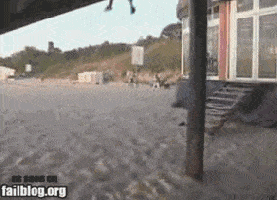
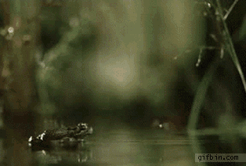

Discover 'NAME'
Make any USB connected webcam capable of recognizing basic hand-gestures. 'NAME' uses skin color filtering, shape recognition, and background subtraction to provide an API that can control vehicular infotainment systems.
Ecocar Infotainment System Image Goes Here
Gesture Recognition
'NAME''s powerful graphics engine can recognize gestures such as swiping, panning, zooming, and rotating. Our flexible API can be extended to more complex gestures as well.
Swiping

Panning

Zooming

Rotating
Graphics Engine
- Skin Colour Filtering: Filtering is done by compiling a range of colours present in the hand of the operator
- Shape Recognition: Once the skin colour has been detected, the shape of hand can be recognized using fingerpoints and contours
- Background Subtraction: By taking a static background image, background can be subtracted out, and new objects detected more easily
put three pictures here in a carousel: 1) filter, 2) shape, 3) background
responsiveslides.js: three images 1) signals/slots API, 2) Sequence diagram of graphics computations, 3) UML class diagram of our code
Open Source API
An API will be available, providing users of the system with events when gestures are detected. The user will not need to know the implementation of the gesture detection system
DOWNLOAD FROM GITHUB BUTTON CENTERED HERE